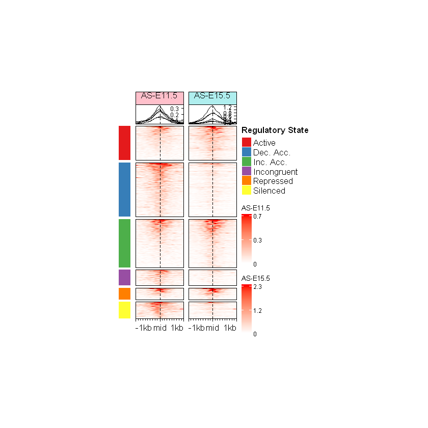
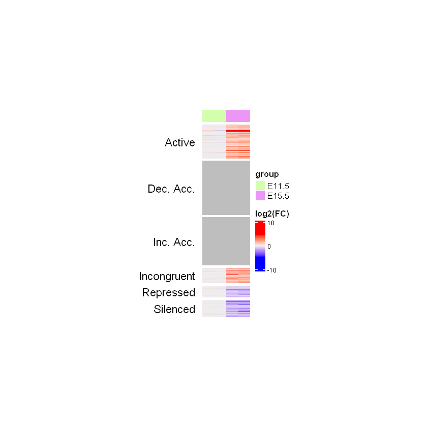
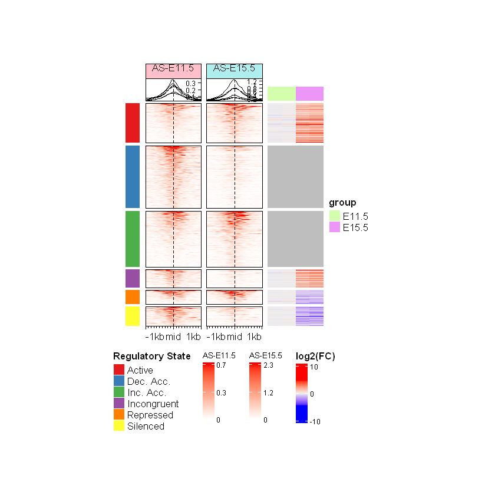
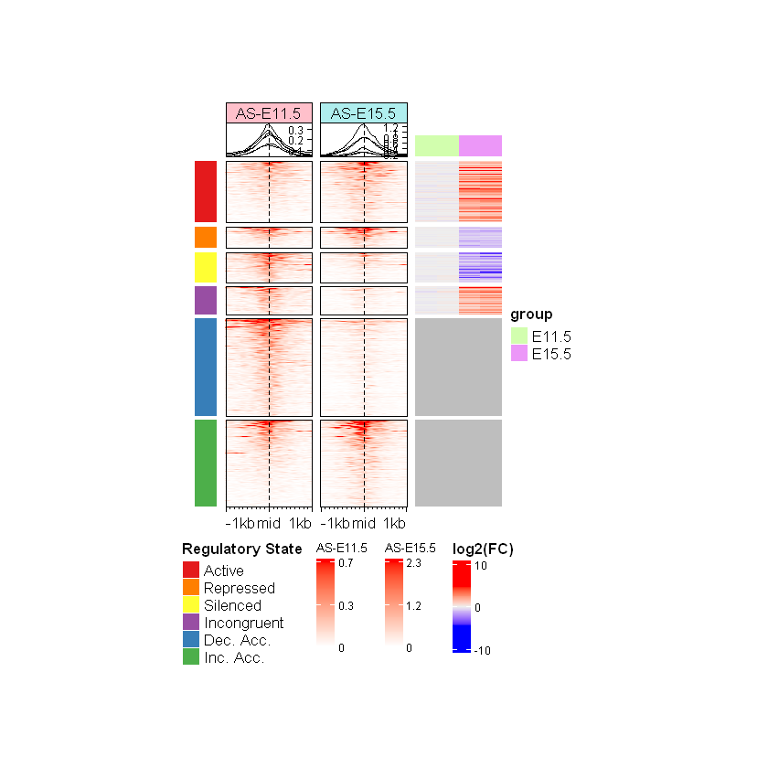

Code
suppressPackageStartupMessages(suppressWarnings({
library(SummarizedExperiment)
library(ComplexHeatmap)
library(EnrichedHeatmap)
library(circlize)
library(dplyr) # used for case_when()
}))SummarizedExperiment objects containing ATAC-seq and RNA-seq data.ComplexHeatmap and EnrichedHeatmap packages to visualize multi-omics data with customizable heatmaps.Integrating chromatin accessibility (ATAC-seq) and gene expression (RNA-seq) data allows us to map the genome’s dynamic regulatory landscape. For this course, we will use a simplified, fold-change-driven approach to categorize these functional states. Because our datasets were already pre-filtered for statistical significance, we will use basic logical conditions on the logFC values to assign categories. This keeps the coding pipeline straightforward while effectively illustrating the core biological concepts.
| Category | ATAC-seq | RNA-seq | Biological interpretation | Analysis pipeline logic |
|---|---|---|---|---|
| Active | ↑ | ↑ | Open chromatin and high gene expression; marks an actively transcribed gene or highly active regulatory element. | ATAC_logFC > 0 & RNA_logFC > 0 |
| Repressed | ↓ | ↓ | Closed chromatin and low/no gene expression; indicates a stably silenced gene or inactive regulatory element. | ATAC_logFC < 0 & RNA_logFC < 0 |
| Silencer Activation | ↑ | ↓ | Chromatin becomes accessible while expression drops; indicates a repressor or silencer element becoming active. | ATAC_logFC > 0 & RNA_logFC < 0 |
| Incongruent | ↓ | ↑ | Closed chromatin but high gene expression; suggests very efficient transcription or regulation from a highly distant active element. | ATAC_logFC < 0 & RNA_logFC > 0 |
| Increased Accessibility | ↑ | NA (~ No change) |
Chromatin becomes more accessible but expression remains unchanged; suggests a “primed” region prepared for future activation. | ATAC_logFC > 0 & is.na(RNA_logFC) |
| Decreased Accessibility | ↓ | NA (~ No change) |
Chromatin becomes less accessible but expression remains unchanged; indicates a localized regulatory shift that does not impact overall transcripts. | ATAC_logFC < 0 & is.na(RNA_logFC) |
Note: More details can be found in the comprehensive epigenetic analysis reference guide.
In our previous preparation steps, we explicitly filtered our ATAC and RNA datasets to only include features with statistically significant changes (abs(logFC) >= .5 and qvalue <= .1). This pre-filtering ensures that categories requiring dual changes (like Active or Repressed) are highly robust.
However, because we removed non-significant genes prior to merging, an NA in our RNA column simply means a region didn’t overlap a significantly changing gene. To keep this course module straightforward, our pipeline maps these NA values to the “Increased/Decreased Accessibility” categories.
This limitation also highlights the challenge of distinguishing a genuinely ‘Silent’ state, characterized by decreased chromatin accessibility and an absolute lack of gene expression, from a ‘Repressed’ state. Attempting to programmatically assign a ‘Silent’ category using only missing logFC values (NA) is inaccurate, as it conflates genes that are completely turned off with genes that are actively expressed but simply unchanged. For this reason, the ‘Silent’ category has been intentionally omitted from our simplified logic.
In a more advanced bioinformatics pipeline, we would merge the full, unfiltered datasets first. This would allow us to evaluate baseline raw counts (baseMean) to mathematically distinguish a genuinely Silent region (zero baseline transcripts) from a primed region where the gene is actively expressed but statistically unchanged.
Before integrating the data, we need to load our required R packages and import the processed SummarizedExperiment objects and normalized matrices that we generated in previous notebooks. Because all the heavy preprocessing and signal extraction is already complete, we no longer need to load intensive data-wrangling packages, and can focus entirely on visualization and integration.
suppressPackageStartupMessages(suppressWarnings({
library(SummarizedExperiment)
library(ComplexHeatmap)
library(EnrichedHeatmap)
library(circlize)
library(dplyr) # used for case_when()
}))Here we load our master overlap annotation object and the normalized signal matrices.
Note that we are not loading the genome-wide atac_se.rds and rna_se.rds SummarizedExperiment objects in this notebook because we are focusing entirely on visualizing the highly significant, pre-filtered regions we extracted in the previous notebook.
As a brief reminder, here are the core steps we took previously to generate these highly refined files:
overlap annotation object: Generated by mapping physical overlaps between our highly significant ATAC-seq peak regions and RNA-seq gene annotations (using our custom metaGR() function), seamlessly joining their statistical metadata together into a single GRanges object.normalizeToMatrix() to extract continuous signal coverage from bigWig files across fixed genomic windows (e.g., +/- 1 kb around peak centers), formatted as mathematical grids for immediate heatmap visualization.overlap <- readRDS("output/overlap_data.rds")
mat_ATAC <- readRDS("output/mat_atac.rds")
mat_RNA <- readRDS("output/mat_rna.rds")As we established in the biological framework during our introduction, combining ATAC-seq (chromatin accessibility) with RNA-seq (gene expression) allows us to mathematically infer the functional state of these regulatory elements.
Using the logFC directions from our master overlap object, we will explicitly annotate every peak into one of these core biological states:
# Use case_when to dynamically calculate the biological state in one elegant sweep
overlap$Regulatory_State <- case_when(
overlap$ATAC_logFC > 0 & overlap$RNA_logFC > 0 ~ "Active",
overlap$ATAC_logFC < 0 & overlap$RNA_logFC < 0 ~ "Silenced",
overlap$ATAC_logFC > 0 & overlap$RNA_logFC < 0 ~ "Repressed",
overlap$ATAC_logFC < 0 & overlap$RNA_logFC > 0 ~ "Incongruent",
# For intergenic regions where there is no matching RNA gene
overlap$ATAC_logFC > 0 & is.na(overlap$RNA_logFC) ~ "Inc. Acc.",
overlap$ATAC_logFC < 0 & is.na(overlap$RNA_logFC) ~ "Dec. Acc.",
# Default fallback if anything slips through (NA is not NULL!)
# Also note that dtype is CHAR, so it cannot be NA
TRUE ~ NA_character_
)
saveRDS(object = overlap, file = "output/overlap_regulatory_status.rds")overlapGRanges object with 1933 ranges and 110 metadata columns:
seqnames ranges strand | ATAC_annotation
<Rle> <IRanges> <Rle> | <character>
peak_1 chr1 3670547-3672665 * | Promoter (<=1kb)
peak_2 chr1 4332510-4332710 * | Intron (ENSMUST00000..
peak_3 chr1 4491755-4492573 * | Promoter (1-2kb)
peak_4 chr1 4571186-4572423 * | Distal Intergenic
peak_5 chr1 4785062-4786325 * | Promoter (<=1kb)
... ... ... ... . ...
peak_1929 chr2 181713633-181714134 * | Promoter (<=1kb)
peak_1930 chr2 181714476-181715931 * | Promoter (<=1kb)
peak_1931 chr2 181762779-181764180 * | Promoter (<=1kb)
peak_1932 chr2 181764664-181764891 * | Promoter (1-2kb)
peak_1933 chr2 181837244-181838655 * | Promoter (<=1kb)
ATAC_geneChr ATAC_geneStart ATAC_geneEnd ATAC_geneLength
<integer> <integer> <integer> <integer>
peak_1 1 3214482 3671498 457017
peak_2 1 4344146 4360314 16169
peak_3 1 4492465 4493735 1271
peak_4 1 4491390 4497354 5965
peak_5 1 4773206 4785710 12505
... ... ... ... ...
peak_1929 2 181715016 181720985 5970
peak_1930 2 181715016 181720985 5970
peak_1931 2 181763332 181827797 64466
peak_1932 2 181763332 181827797 64466
peak_1933 2 181837854 181857461 19608
ATAC_geneStrand ATAC_geneId ATAC_transcriptId
<integer> <character> <character>
peak_1 2 497097 ENSMUST00000070533.4
peak_2 2 19888 ENSMUST00000027032.5
peak_3 2 20671 ENSMUST00000191939.1
peak_4 2 20671 ENSMUST00000192650.5
peak_5 2 27395 ENSMUST00000130201.7
... ... ... ...
peak_1929 1 18389 ENSMUST00000071585.9
peak_1930 1 18389 ENSMUST00000071585.9
peak_1931 1 17932 ENSMUST00000081125.10
peak_1932 1 17932 ENSMUST00000081125.10
peak_1933 1 245867 ENSMUST00000029116.13
ATAC_distanceToTSS ATAC_ENSEMBL ATAC_SYMBOL
<numeric> <character> <character>
peak_1 0 ENSMUSG00000051951 Xkr4
peak_2 27604 ENSMUSG00000025900 Rp1
peak_3 1162 ENSMUSG00000025902 Sox17
peak_4 -73832 ENSMUSG00000025902 Sox17
peak_5 0 ENSMUSG00000033845 Mrpl15
... ... ... ...
peak_1929 -882 ENSMUSG00000027584 Oprl1
peak_1930 0 ENSMUSG00000027584 Oprl1
peak_1931 0 ENSMUSG00000010505 Myt1
peak_1932 1332 ENSMUSG00000010505 Myt1
peak_1933 0 ENSMUSG00000027589 Pcmtd2
ATAC_GENENAME ATAC_anno ATAC_logFC ATAC_logCPM ATAC_F
<character> <character> <numeric> <numeric> <numeric>
peak_1 X-linked Kx blood gr.. Promoter 0.602984 10.45378 41.78446
peak_2 retinitis pigmentosa.. Intron 0.855748 5.18424 3.68371
peak_3 SRY (sex determining.. Promoter -0.620926 7.13469 9.14522
peak_4 SRY (sex determining.. Intergenic -0.511046 8.90885 15.15688
peak_5 mitochondrial riboso.. Promoter 0.540908 8.63469 15.08892
... ... ... ... ... ...
peak_1929 opioid receptor-like 1 Promoter 1.922716 6.37607 40.6570
peak_1930 opioid receptor-like 1 Promoter 1.213349 7.47748 37.2944
peak_1931 myelin transcription.. Promoter -2.192918 7.94745 146.4501
peak_1932 myelin transcription.. Promoter -1.275275 5.54135 10.4487
peak_1933 protein-L-isoasparta.. Promoter 0.689247 7.92175 16.6788
ATAC_PValue ATAC_qvalue RNA_Row.names RNA_gene_id RNA_SYMBOL
<numeric> <numeric> <character> <character> <character>
peak_1 6.58453e-08 4.81983e-07 ENSMUSG00000051951 497097 Xkr4
peak_2 6.13517e-02 9.28785e-02 <NA> <NA> <NA>
peak_3 4.12368e-03 8.38540e-03 <NA> <NA> <NA>
peak_4 3.27158e-04 8.67115e-04 <NA> <NA> <NA>
peak_5 3.36058e-04 8.82634e-04 <NA> <NA> <NA>
... ... ... ... ... ...
peak_1929 8.88771e-08 6.28500e-07 <NA> <NA> <NA>
peak_1930 2.22741e-07 1.40677e-06 ENSMUSG00000027584 18389 Oprl1
peak_1931 1.07660e-15 1.40573e-13 ENSMUSG00000010505 17932 Myt1
peak_1932 2.30922e-03 4.97558e-03 ENSMUSG00000010505 17932 Myt1
peak_1933 1.81039e-04 5.14680e-04 <NA> <NA> <NA>
RNA_GENENAME RNA_ENSEMBL RNA_geneLength
<character> <character> <integer>
peak_1 X-linked Kx blood gr.. ENSMUSG00000051951 457017
peak_2 <NA> <NA> <NA>
peak_3 <NA> <NA> <NA>
peak_4 <NA> <NA> <NA>
peak_5 <NA> <NA> <NA>
... ... ... ...
peak_1929 <NA> <NA> <NA>
peak_1930 opioid receptor-like 1 ENSMUSG00000027584 5970
peak_1931 myelin transcription.. ENSMUSG00000010505 64466
peak_1932 myelin transcription.. ENSMUSG00000010505 64466
peak_1933 <NA> <NA> <NA>
RNA_geneChr RNA_geneStart RNA_geneEnd RNA_geneStrand RNA_geneId
<character> <integer> <integer> <character> <character>
peak_1 chr1 3214482 3671498 - 497097
peak_2 <NA> <NA> <NA> <NA> <NA>
peak_3 <NA> <NA> <NA> <NA> <NA>
peak_4 <NA> <NA> <NA> <NA> <NA>
peak_5 <NA> <NA> <NA> <NA> <NA>
... ... ... ... ... ...
peak_1929 <NA> <NA> <NA> <NA> <NA>
peak_1930 chr2 181715016 181720985 + 18389
peak_1931 chr2 181763332 181827797 + 17932
peak_1932 chr2 181763332 181827797 + 17932
peak_1933 <NA> <NA> <NA> <NA> <NA>
RNA_transcriptId RNA_anno RNA_logFC RNA_logCPM RNA_F
<character> <character> <numeric> <numeric> <numeric>
peak_1 ENSMUST00000070533.4 Gene 1.37498 5.62452 33.7077
peak_2 <NA> <NA> NA NA NA
peak_3 <NA> <NA> NA NA NA
peak_4 <NA> <NA> NA NA NA
peak_5 <NA> <NA> NA NA NA
... ... ... ... ... ...
peak_1929 <NA> <NA> NA NA NA
peak_1930 ENSMUST00000071585.9 Gene 1.87383 9.02372 145.077
peak_1931 ENSMUST00000081125.10 Gene -1.76404 8.78746 142.012
peak_1932 ENSMUST00000081125.10 Gene -1.76404 8.78746 142.012
peak_1933 <NA> <NA> NA NA NA
RNA_PValue RNA_qvalue H3K4me3_annotation H3K4me3_geneChr
<numeric> <numeric> <character> <integer>
peak_1 0.00224273 0.00628871 Promoter (<=1kb) 1
peak_2 NA NA <NA> <NA>
peak_3 NA NA <NA> <NA>
peak_4 NA NA Distal Intergenic 1
peak_5 NA NA <NA> <NA>
... ... ... ... ...
peak_1929 NA NA <NA> <NA>
peak_1930 7.64282e-05 0.000816625 Promoter (<=1kb) 2
peak_1931 8.04360e-05 0.000822152 Promoter (<=1kb) 2
peak_1932 8.04360e-05 0.000822152 Promoter (<=1kb) 2
peak_1933 NA NA <NA> <NA>
H3K4me3_geneStart H3K4me3_geneEnd H3K4me3_geneLength
<integer> <integer> <integer>
peak_1 3214482 3671498 457017
peak_2 <NA> <NA> <NA>
peak_3 <NA> <NA> <NA>
peak_4 4491390 4497354 5965
peak_5 <NA> <NA> <NA>
... ... ... ...
peak_1929 <NA> <NA> <NA>
peak_1930 181715016 181720985 5970
peak_1931 181763332 181827797 64466
peak_1932 181763332 181827797 64466
peak_1933 <NA> <NA> <NA>
H3K4me3_geneStrand H3K4me3_geneId H3K4me3_transcriptId
<integer> <character> <character>
peak_1 2 497097 ENSMUST00000070533.4
peak_2 <NA> <NA> <NA>
peak_3 <NA> <NA> <NA>
peak_4 2 20671 ENSMUST00000192650.5
peak_5 <NA> <NA> <NA>
... ... ... ...
peak_1929 <NA> <NA> <NA>
peak_1930 1 18389 ENSMUST00000071585.9
peak_1931 1 17932 ENSMUST00000081125.10
peak_1932 1 17932 ENSMUST00000081125.10
peak_1933 <NA> <NA> <NA>
H3K4me3_distanceToTSS H3K4me3_ENSEMBL H3K4me3_SYMBOL
<numeric> <character> <character>
peak_1 0 ENSMUSG00000051951 Xkr4
peak_2 NA <NA> <NA>
peak_3 NA <NA> <NA>
peak_4 -73878 ENSMUSG00000025902 Sox17
peak_5 NA <NA> <NA>
... ... ... ...
peak_1929 NA <NA> <NA>
peak_1930 0 ENSMUSG00000027584 Oprl1
peak_1931 0 ENSMUSG00000010505 Myt1
peak_1932 0 ENSMUSG00000010505 Myt1
peak_1933 NA <NA> <NA>
H3K4me3_GENENAME H3K4me3_anno H3K4me3_logFC H3K4me3_logCPM
<character> <character> <numeric> <numeric>
peak_1 X-linked Kx blood gr.. Promoter 0.607114 9.26749
peak_2 <NA> <NA> NA NA
peak_3 <NA> <NA> NA NA
peak_4 SRY (sex determining.. Intergenic 0.567068 7.36589
peak_5 <NA> <NA> NA NA
... ... ... ... ...
peak_1929 <NA> <NA> NA NA
peak_1930 opioid receptor-like 1 Promoter 1.97861 7.54088
peak_1931 myelin transcription.. Promoter -2.26675 6.33414
peak_1932 myelin transcription.. Promoter -2.26675 6.33414
peak_1933 <NA> <NA> NA NA
H3K4me3_F H3K4me3_PValue H3K4me3_qvalue H3K4me1_annotation
<numeric> <numeric> <numeric> <character>
peak_1 135.4429 4.65079e-31 1.28968e-29 <NA>
peak_2 NA NA NA <NA>
peak_3 NA NA NA <NA>
peak_4 33.3348 8.04296e-09 6.25198e-08 <NA>
peak_5 NA NA NA Promoter (<=1kb)
... ... ... ... ...
peak_1929 NA NA NA <NA>
peak_1930 325.324 2.42880e-71 2.10325e-69 Promoter (<=1kb)
peak_1931 316.946 1.38385e-69 1.13845e-67 <NA>
peak_1932 316.946 1.38385e-69 1.13845e-67 <NA>
peak_1933 NA NA NA Promoter (<=1kb)
H3K4me1_geneChr H3K4me1_geneStart H3K4me1_geneEnd
<integer> <integer> <integer>
peak_1 <NA> <NA> <NA>
peak_2 <NA> <NA> <NA>
peak_3 <NA> <NA> <NA>
peak_4 <NA> <NA> <NA>
peak_5 1 4783572 4785692
... ... ... ...
peak_1929 <NA> <NA> <NA>
peak_1930 2 181715703 181719372
peak_1931 <NA> <NA> <NA>
peak_1932 <NA> <NA> <NA>
peak_1933 2 181837913 181857446
H3K4me1_geneLength H3K4me1_geneStrand H3K4me1_geneId
<integer> <integer> <character>
peak_1 <NA> <NA> <NA>
peak_2 <NA> <NA> <NA>
peak_3 <NA> <NA> <NA>
peak_4 <NA> <NA> <NA>
peak_5 2121 2 27395
... ... ... ...
peak_1929 <NA> <NA> <NA>
peak_1930 3670 1 18389
peak_1931 <NA> <NA> <NA>
peak_1932 <NA> <NA> <NA>
peak_1933 19534 1 245867
H3K4me1_transcriptId H3K4me1_distanceToTSS H3K4me1_ENSEMBL
<character> <numeric> <character>
peak_1 <NA> NA <NA>
peak_2 <NA> NA <NA>
peak_3 <NA> NA <NA>
peak_4 <NA> NA <NA>
peak_5 ENSMUST00000132625.1 412 ENSMUSG00000033845
... ... ... ...
peak_1929 <NA> NA <NA>
peak_1930 ENSMUST00000184127.1 38 ENSMUSG00000027584
peak_1931 <NA> NA <NA>
peak_1932 <NA> NA <NA>
peak_1933 ENSMUST00000108754.7 318 ENSMUSG00000027589
H3K4me1_SYMBOL H3K4me1_GENENAME H3K4me1_anno H3K4me1_logFC
<character> <character> <character> <numeric>
peak_1 <NA> <NA> <NA> NA
peak_2 <NA> <NA> <NA> NA
peak_3 <NA> <NA> <NA> NA
peak_4 <NA> <NA> <NA> NA
peak_5 Mrpl15 mitochondrial riboso.. Promoter 0.674968
... ... ... ... ...
peak_1929 <NA> <NA> <NA> NA
peak_1930 Oprl1 opioid receptor-like 1 Promoter 1.086359
peak_1931 <NA> <NA> <NA> NA
peak_1932 <NA> <NA> <NA> NA
peak_1933 Pcmtd2 protein-L-isoasparta.. Promoter 0.767955
H3K4me1_logCPM H3K4me1_F H3K4me1_PValue H3K4me1_qvalue
<numeric> <numeric> <numeric> <numeric>
peak_1 NA NA NA NA
peak_2 NA NA NA NA
peak_3 NA NA NA NA
peak_4 NA NA NA NA
peak_5 5.83337 12.1017 0.00050642 0.00802852
... ... ... ... ...
peak_1929 NA NA NA NA
peak_1930 6.13490 36.7670 1.39101e-09 1.90365e-07
peak_1931 NA NA NA NA
peak_1932 NA NA NA NA
peak_1933 6.07534 18.4909 1.72723e-05 5.94889e-04
H3K27me3_annotation H3K27me3_geneChr H3K27me3_geneStart
<character> <integer> <integer>
peak_1 <NA> <NA> <NA>
peak_2 <NA> <NA> <NA>
peak_3 Promoter (<=1kb) 1 4492465
peak_4 <NA> <NA> <NA>
peak_5 <NA> <NA> <NA>
... ... ... ...
peak_1929 <NA> <NA> <NA>
peak_1930 <NA> <NA> <NA>
peak_1931 <NA> <NA> <NA>
peak_1932 <NA> <NA> <NA>
peak_1933 <NA> <NA> <NA>
H3K27me3_geneEnd H3K27me3_geneLength H3K27me3_geneStrand
<integer> <integer> <integer>
peak_1 <NA> <NA> <NA>
peak_2 <NA> <NA> <NA>
peak_3 4493735 1271 2
peak_4 <NA> <NA> <NA>
peak_5 <NA> <NA> <NA>
... ... ... ...
peak_1929 <NA> <NA> <NA>
peak_1930 <NA> <NA> <NA>
peak_1931 <NA> <NA> <NA>
peak_1932 <NA> <NA> <NA>
peak_1933 <NA> <NA> <NA>
H3K27me3_geneId H3K27me3_transcriptId H3K27me3_distanceToTSS
<character> <character> <numeric>
peak_1 <NA> <NA> NA
peak_2 <NA> <NA> NA
peak_3 20671 ENSMUST00000191939.1 0
peak_4 <NA> <NA> NA
peak_5 <NA> <NA> NA
... ... ... ...
peak_1929 <NA> <NA> NA
peak_1930 <NA> <NA> NA
peak_1931 <NA> <NA> NA
peak_1932 <NA> <NA> NA
peak_1933 <NA> <NA> NA
H3K27me3_ENSEMBL H3K27me3_SYMBOL H3K27me3_GENENAME
<character> <character> <character>
peak_1 <NA> <NA> <NA>
peak_2 <NA> <NA> <NA>
peak_3 ENSMUSG00000025902 Sox17 SRY (sex determining..
peak_4 <NA> <NA> <NA>
peak_5 <NA> <NA> <NA>
... ... ... ...
peak_1929 <NA> <NA> <NA>
peak_1930 <NA> <NA> <NA>
peak_1931 <NA> <NA> <NA>
peak_1932 <NA> <NA> <NA>
peak_1933 <NA> <NA> <NA>
H3K27me3_anno H3K27me3_logFC H3K27me3_logCPM H3K27me3_F
<character> <numeric> <numeric> <numeric>
peak_1 <NA> NA NA NA
peak_2 <NA> NA NA NA
peak_3 Promoter -1.0597 9.04668 87.0802
peak_4 <NA> NA NA NA
peak_5 <NA> NA NA NA
... ... ... ... ...
peak_1929 <NA> NA NA NA
peak_1930 <NA> NA NA NA
peak_1931 <NA> NA NA NA
peak_1932 <NA> NA NA NA
peak_1933 <NA> NA NA NA
H3K27me3_PValue H3K27me3_qvalue H3K27ac_annotation H3K27ac_geneChr
<numeric> <numeric> <character> <integer>
peak_1 NA NA Promoter (<=1kb) 1
peak_2 NA NA <NA> <NA>
peak_3 1.32026e-20 5.28858e-18 <NA> <NA>
peak_4 NA NA <NA> <NA>
peak_5 NA NA Promoter (<=1kb) 1
... ... ... ... ...
peak_1929 NA NA Promoter (<=1kb) 2
peak_1930 NA NA Promoter (<=1kb) 2
peak_1931 NA NA Promoter (<=1kb) 2
peak_1932 NA NA Promoter (<=1kb) 2
peak_1933 NA NA Promoter (<=1kb) 2
H3K27ac_geneStart H3K27ac_geneEnd H3K27ac_geneLength
<integer> <integer> <integer>
peak_1 3214482 3671498 457017
peak_2 <NA> <NA> <NA>
peak_3 <NA> <NA> <NA>
peak_4 <NA> <NA> <NA>
peak_5 4783572 4785692 2121
... ... ... ...
peak_1929 181715016 181720985 5970
peak_1930 181715016 181720985 5970
peak_1931 181763332 181827797 64466
peak_1932 181763332 181827797 64466
peak_1933 181837854 181857461 19608
H3K27ac_geneStrand H3K27ac_geneId H3K27ac_transcriptId
<integer> <character> <character>
peak_1 2 497097 ENSMUST00000070533.4
peak_2 <NA> <NA> <NA>
peak_3 <NA> <NA> <NA>
peak_4 <NA> <NA> <NA>
peak_5 2 27395 ENSMUST00000132625.1
... ... ... ...
peak_1929 1 18389 ENSMUST00000071585.9
peak_1930 1 18389 ENSMUST00000071585.9
peak_1931 1 17932 ENSMUST00000081125.10
peak_1932 1 17932 ENSMUST00000081125.10
peak_1933 1 245867 ENSMUST00000029116.13
H3K27ac_distanceToTSS H3K27ac_ENSEMBL H3K27ac_SYMBOL
<numeric> <character> <character>
peak_1 0 ENSMUSG00000051951 Xkr4
peak_2 NA <NA> <NA>
peak_3 NA <NA> <NA>
peak_4 NA <NA> <NA>
peak_5 0 ENSMUSG00000033845 Mrpl15
... ... ... ...
peak_1929 0 ENSMUSG00000027584 Oprl1
peak_1930 0 ENSMUSG00000027584 Oprl1
peak_1931 0 ENSMUSG00000010505 Myt1
peak_1932 0 ENSMUSG00000010505 Myt1
peak_1933 0 ENSMUSG00000027589 Pcmtd2
H3K27ac_GENENAME H3K27ac_anno H3K27ac_logFC H3K27ac_logCPM
<character> <character> <numeric> <numeric>
peak_1 X-linked Kx blood gr.. Promoter 1.25269 8.81735
peak_2 <NA> <NA> NA NA
peak_3 <NA> <NA> NA NA
peak_4 <NA> <NA> NA NA
peak_5 mitochondrial riboso.. Promoter 1.07555 6.41736
... ... ... ... ...
peak_1929 opioid receptor-like 1 Promoter 1.363849 7.84616
peak_1930 opioid receptor-like 1 Promoter 1.363849 7.84616
peak_1931 myelin transcription.. Promoter -0.640374 9.23253
peak_1932 myelin transcription.. Promoter -0.640374 9.23253
peak_1933 protein-L-isoasparta.. Promoter 0.791927 6.70742
H3K27ac_F H3K27ac_PValue H3K27ac_qvalue name
<numeric> <numeric> <numeric> <character>
peak_1 151.4959 1.67395e-34 4.08130e-32 peak_1
peak_2 NA NA NA peak_2
peak_3 NA NA NA peak_3
peak_4 NA NA NA peak_4
peak_5 26.5442 2.63728e-07 5.98352e-06 peak_5
... ... ... ... ...
peak_1929 104.9298 1.79151e-24 2.34334e-22 peak_1929
peak_1930 104.9298 1.79151e-24 2.34334e-22 peak_1930
peak_1931 53.0025 3.64753e-13 1.90481e-11 peak_1931
peak_1932 53.0025 3.64753e-13 1.90481e-11 peak_1932
peak_1933 18.4367 1.77717e-05 2.82934e-04 peak_1933
Regulatory_State
<character>
peak_1 Active
peak_2 Inc. Acc.
peak_3 Dec. Acc.
peak_4 Dec. Acc.
peak_5 Inc. Acc.
... ...
peak_1929 Inc. Acc.
peak_1930 Active
peak_1931 Silenced
peak_1932 Silenced
peak_1933 Inc. Acc.
-------
seqinfo: 21 sequences from an unspecified genome; no seqlengthsprint(overlap$Regulatory_State[1:5])[1] "Active" "Inc. Acc." "Dec. Acc." "Dec. Acc." "Inc. Acc."To visually prove the direct relationship between chromatin accessibility and gene expression, we will leverage the modular architecture we built using the EnrichedHeatmap and ComplexHeatmap packages.
Our integration strategy will follow three clear steps:
make_EH_custom_na() wrapper function (which we successfully used for our ChIP-seq and WGBS data) to plot the continuous ATAC-seq signal over our regulatory regions. Crucially, we will split the rows of this heatmap by the newly calculated Regulatory_State categories we just defined.EnrichedHeatmap. Instead, we will construct a standard ComplexHeatmap block to visualize the corresponding gene expression changes.To ensure our color scaling and formatting remains mathematically consistent across our entire course, we need to reuse the heatmap plotting function we perfected in previous notebooks (custom_enrichedheatmap_plotting).
Rather than redundantly copy-pasting this large block of code across every notebook, we have saved it into a dedicated, external R script. We can instantly load this tool into our environment using a single source() command.
# Load our custom multi-omics plotting tool from the external script
# (Note that the R kernel environment was launched from the root of the main project folder)
source("scripts/custom_enrichedheatmap_plotting.R")While our custom wrapper perfectly automates the most critical layout settings, there are hundreds of other parameters available to tweak almost every single pixel of our plots! If we ever need to heavily customize specific fonts, borders, grid gaps, or annotation orientations, we should explore the incredibly comprehensive official ComplexHeatmap documentation and EnrichedHeatmap documentation.
We want to stratify the E11.5 and E15.5 ATAC-seq data using our newly calculated Regulatory_State categories. For that, we define an annotation vector (split_anno) to physically split the rows of the heatmap into functional clusters, and generate a narrow, adjacent color strip (anno_hm) to visually label each of these distinct biological states (Active, Silenced, Repressed, etc.), just as we did previously using genomic annotation.
split_state <- overlap$Regulatory_State
names(split_state) <- names(overlap)
print(head(split_state)) peak_1 peak_2 peak_3 peak_4 peak_5 peak_6
"Active" "Inc. Acc." "Dec. Acc." "Dec. Acc." "Inc. Acc." "Dec. Acc." Just as we did in the previous notebooks when we labeled our peaks by their physical location (Promoter vs. Intron) or genomic annotations (Exon, Intron, etc.), we will dynamically assign a distinct color from the Set1 palette to each of our newly defined biological categories (Active, Silenced, Repressed, etc.).
# Dynamically grab enough colors from Set1 for our distinct biological states
state_names <- na.omit(sort(unique(split_state)))
anno_colors <- RColorBrewer::brewer.pal(n = length(state_names), name = "Set1")
names(anno_colors) <- state_namesNotice that we wrap our unique categories in
na.omit(). Because ourcase_when()logic earlier included a fallbackNAfor any peaks that didn’t perfectly match our mathematical criteria, theunique()function would accidentally countNAas a distinct biological category and try to assign a color to it!na.omit()safely purges any missing values from the list before we build our color palette.
eh_state_anno <- rowAnnotation(
df = data.frame(Regulatory_State = split_state),
col = list(Regulatory_State = anno_colors),
show_annotation_name = FALSE,
# show_legend = FALSE, # Hides the stubborn right-side legend
annotation_legend_param = list(Regulatory_State = list(title = "Regulatory State")))When assembling complex multi-omics figures, the ComplexHeatmap layout engine can force row annotation legends (like our Regulatory State colors) to strictly follow the continuous heatmaps on the right side of the plot. If we want to physically separate them and move our categorical metadata to the bottom while keeping the continuous heatmaps on the right, we have to bypass the automatic layout engine.
To achieve this structural layout, we first disable the automatic legend generation inside our eh_state_anno object (by passing show_legend = FALSE). We then use the advanced Legend() function to manually reconstruct it as a standalone object (lgd_state), formatting it to print horizontally. We can thus inject this custom legend directly into our draw() function via the annotation_legend_list argument, giving us absolute architectural control over where it is ultimately placed.
eh_atac_11h <- custom_enrichedheatmap_plotting(
norm_mat = mat_ATAC[["ATAC_11half"]],
hm_name = "AS-E11.5",
hm_width = unit(2, "cm"), hm_height = unit(8, "cm"),
top_anno_height = unit(.8, "cm"),
col_fill = "pink"
)
eh_atac_15h <- custom_enrichedheatmap_plotting(
norm_mat = mat_ATAC[["ATAC_15half"]],
hm_name = "AS-E15.5",
hm_width = unit(2, "cm"), hm_height = unit(8, "cm"),
top_anno_height = unit(.8, "cm"),
col_fill = "paleturquoise"
)
# Manually build the Regulatory State legend so we can force it to the bottom
# lgd_state <- Legend(
# labels = names(anno_colors),
# legend_gp = gpar(fill = anno_colors),
# title = "Regulatory State",
# direction = "horizontal")
draw(
eh_state_anno + eh_atac_11h + eh_atac_15h,
# annotation_legend_list = lgd_state,
split = split_state,
)
As expected, the categories defined by decreasing accessibility (Dec. Acc., Incongruent, and Silenced) show a clear, global loss of ATAC signal as we transition from E11.5 to E15.5. The chromatin in these regions is physically shutting down during development. Conversely, the categories defined by increasing accessibility (Active, Inc. Acc., and Repressed) clearly gain intensity in E15.5 (the E15.5 heatmap scales up to 2.3, whereas E11.5 only goes to 0.7).
Counter-intuitively, the raw ATAC signal in the Dec. Acc. cluster (at E11.5) appears significantly stronger and physically wider than the signal seen in the Inc. Acc. cluster (at E15.5). This suggests that the open regulatory regions driving early developmental states (E11.5) might exist in massive, highly accessible “super-enhancer” clusters, whereas the newly opening regions required later in development (E15.5) are much more tightly and narrowly focused.
We often assume that regions driving active, increasing gene expression (the red Active cluster) would have the most blindingly intense ATAC signal. However, looking at the heatmap, the signal intensity is surprisingly moderate compared to the Dec. Acc. group. This confirms that a regulatory element doesn’t need to be a massive, gaping hole in the chromatin to successfully drive gene expression; it only needs to be open just enough to let the specific transcription machinery dock.
Our RNA-seq data consists of discrete, normalized expression values (one mathematical value per gene, per sample). Therefore, just as we did in Notebook 3, we will map this data onto a standard ComplexHeatmap block rather than an EnrichedHeatmap. To keep our analysis biologically consistent, we will continue to stratify these rows using the exact same split_state categories we just applied to the ATAC-seq data, allowing us to observe how gene expression behaves within each of our defined regulatory states.
print(colnames(mat_RNA))[1] "RNA_11half_1" "RNA_11half_2" "RNA_15half_1" "RNA_15half_2"set.seed(100)
# Refactor/rename the RNA matrix column headers
rna_groups <- ifelse(grepl("11half", colnames(mat_RNA)), "E11.5", "E15.5")
rna_hm <- Heatmap(
matrix = mat_RNA,
row_split = split_state, # Stratify rows by biological category
cluster_columns = FALSE,
cluster_rows = FALSE, # CRITICAL: prevents clustering from crashing on NA values!
show_row_names = FALSE,
show_column_names = FALSE,
row_title_rot = 0, # Forces the split category labels to print horizontally
show_row_dend = FALSE,
na_col = "grey", # Grey out regions with no RNA data
width = unit(2, "cm"), height = unit(8, "cm"),
top_annotation = HeatmapAnnotation(
group = rna_groups,
show_annotation_name = FALSE),
heatmap_legend_param = list(
at = scales::pretty_breaks(n = 2)(
range(mat_RNA, na.rm = TRUE)),
labels_gp = gpar(fontsize = 7),
title = "log2(FC)"))
draw(rna_hm, merge_legend = TRUE)
Notice that we add merge_legend = TRUE to our final draw() command. While this parameter is typically used to deduplicate mathematically identical colorbars, it also serves as a brilliant layout trick. Because our new composite figure mixes three disparate types of legends (the main heatmap scales, a row annotation for biological state, and a column annotation for the RNA stages), the default layout algorithm will often scatter them side-by-side into different zones on the page. This command acts as a strict architectural override, forcing the engine to collect every single legend and pack them into one beautifully stacked vertical column on the right.
Looking specifically at the RNA-seq heatmap block, we can cleanly visualize the distinct transcriptional fates of our genes during development:
The Upregulated Genes (Red): The Active and Incongruent clusters display a striking shift from a pale E11.5 baseline to a deep red E15.5 state. This visually confirms that the genes linked to these regulatory regions are strongly upregulated and actively turning on as embryonic development progresses.
The Downregulated Genes (Blue): Conversely, the Silenced and Repressed clusters transition from the E11.5 baseline into a deep blue state in E15.5. This vividly demonstrates transcriptional shutdown, confirming that these specific genes are being deactivated in the later embryonic stage.
The Transcriptional “Grey Zones”: Notice that the massive Dec. Acc. and Inc. Acc. blocks are completely grey (NA). This perfectly visualizes our mathematical filtering: these specific categories represent dynamic regions that lack any significant corresponding gene expression data. They remain transcriptionally silent or statistically insignificant in our RNA analysis.
Using the + operator provided by ComplexHeatmap, we can now concatenate our colored biological annotation bar, the continuous ATAC-seq accessibility heatmaps, and the discrete RNA-seq expression heatmap into a single, highly informative composite figure.
By passing our split_state categories directly into the global draw() engine (which overrides individual settings), the entire composite visualization is perfectly stratified, allowing us to seamlessly validate the functional relationship between chromatin state and gene expression in a single glance.
composite_ht <- eh_state_anno + eh_atac_11h + eh_atac_15h + rna_hm
draw(
composite_ht,
split = split_state, # global splitting
# annotation_legend_list = lgd_state,
# annotation_legend_side = "right",
heatmap_legend_side = "bottom"
)
Exercise: Can you change the order of the heatmap regions to follow this exact biological hierarchy? 1. Active 2. Repressed 3. Silent 4. Incongruent 5. Dec. Acc. 6. Inc. Acc.
Hint: The split argument in the draw() function automatically orders the heatmap splits based on the factor levels of the provided grouping variable (split_anno).
To reorder the layout, we convert our split_state text vector into a formal R factor, explicitly defining the levels in our exact desired biological hierarchy.
Because ComplexHeatmap is highly optimized, its layout engine will automatically detect these new factor levels and physically reorder the rows to match. The best part of this object-oriented design is that we do not need to recompute any of the heavy ATAC or RNA heatmaps! We simply re-instantiate the lightweight eh_state_anno color bar so it learns the new order, stitch it right back onto our existing heatmap objects, and effortlessly render the plot.
print(unique(split_state))[1] "Active" "Inc. Acc." "Dec. Acc." "Incongruent" "Silenced"
[6] "Repressed" # Convert to a strict factor with the desired hierarchical order
split_state_reordered <- factor(
split_state,
levels = c(
"Active", "Repressed", "Silenced", "Incongruent", "Dec. Acc.", "Inc. Acc."))
# Re-instantiate the row annotation ONLY so it learns the new order
eh_state_anno <- rowAnnotation(
df = data.frame(Regulatory_State = split_state_reordered),
col = list(Regulatory_State = anno_colors),
show_annotation_name = FALSE,
annotation_legend_param = list(Regulatory_State = list(title = "Regulatory State")))
# 3Redraw the composite plot
composite_ht_2 <- eh_state_anno + eh_atac_11h + eh_atac_15h + rna_hmInstead of manually tweaking the borders, title padding, and legend spacing for every single heatmap we create, ComplexHeatmap provides a powerful global options engine called ht_opt. By configuring these aesthetic rules just once per R session, they will automatically apply to every subsequent plot, guaranteeing a polished, publication-ready look with minimal code.
# Shrinks the empty space between the main heatmap and its title (e.g., "ATAC-E11.5")
ht_opt$TITLE_PADDING <- unit(1, "mm")
# Controls the spacing between multiple different legend boxes so they don't overlap
ht_opt$legend_gap <- unit(3, "mm")
# Shrinks the physical height of the colored squares/bars inside the legend
ht_opt$legend_grid_height <- unit(2, "mm")
# Shrinks the physical width of the colored squares/bars inside the legend
ht_opt$legend_grid_width <- unit(2, "mm")
# Squeezes the empty gap between the main heatmap body and the legend itself
ht_opt$HEATMAP_LEGEND_PADDING <- unit(1, "mm")
# Automatically draws a clean, sharp black border around every heatmap matrix!
ht_opt$heatmap_border <- TRUEdraw(composite_ht_2, split = split_state_reordered, heatmap_legend_side = "bottom")
By perfectly aligning continuous chromatin accessibility (ATAC-seq) with discrete transcriptional output (RNA-seq), this composite heatmap reveals the stunning complexity of epigenetic regulation during embryonic development. We can visually validate several profound biological paradigms in a single glance:
The Active (Red) and Silenced (Yellow) clusters clearly demonstrate the classic “central dogma” of epigenetics: - Active: We see the ATAC signal physically widening and intensifying in E15.5, allowing the transcription machinery to dock. This structurally drives the massive surge in gene expression visually confirmed in the red RNA-seq block. - Silenced: Conversely, we see the chromatin physically condensing and shutting down (loss of ATAC signal in E15.5), which directly results in the severe deactivation of the corresponding genes (blue RNA-seq block).
Biology is rarely perfectly linear. In the Repressed (Orange) cluster, the chromatin actually gains massive accessibility in E15.5. However, the corresponding RNA-seq block turns deep blue, indicating the gene is strongly shut off. This visually proves that newly opened DNA is not always an activator; these specific regions are likely acting as docking sites for powerful transcriptional repressors.
The Incongruent (Purple) cluster shows the exact opposite paradox: the local chromatin is physically closing down (loss of ATAC signal), yet the gene strongly turns on (red RNA). This implies that these genes are no longer dependent on this specific local element, and are likely being driven by a different, distant “super-enhancer” looping in from elsewhere in the genome.
Finally, the massive bottom blocks represent regions undergoing massive structural changes (violent opening or closing of chromatin) without any corresponding significant gene expression (grey RNA). This perfectly illustrates a critical lesson: chromatin accessibility does not guarantee transcription. Many of these regions are structural elements, distant intergenic enhancers preparing for a later developmental stage, or regions driving non-coding RNAs not captured in our matrix.